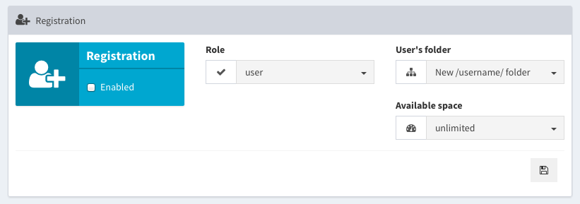

Veno File Manager 3
Thank you for purchasing Veno File Manager 3.
If you have any questions that are beyond the scope of this help file,
visit the Support forum.
or feel free to email via the support contact form.
Thanks so much!
Installation
Copy all files contained inside the “VFM” folder to your web space via FTP (put everything in the root if you will use the whole domain as file manager, otherwise create a custom directory and upload everything in it).
Navigate with your browser to the url where you uploaded the files, if it's your first run the script should redirect you to the /vfm-admin/ login
log in as:
- user: admin
- password: password
Inside the administration area, go under USERS and update your Master Admin credentials (password and username).
That’s all! go back to the VFM front-end and start building your archive with basic settings.
Uploads Directory
By default VFM keeps uploaded files inside the directory called uploads, and creates sub directories in it.
If you want to rename the main Uploads Directory, do it from the Administration panel, this way the system will rename the folder and will update configuration settings as well.
You can use VFM also with preexistent archives uploadnig
.htaccess
index.php
vfm-thumb.php
/vfm-admin/
at the same level of your main uploads' directory, and updating the Uploads Directory field under general settings
Migration
If you are moving the script already installed and configured in a new location (from local to server, from server to local, or in a different directory) remember to update the value URL of your app under Preferences > general settings.
This should be always the full URL of your application, with a final slash / ( e.g. http://www.example.com/ )
Options
To best fit your needs you have an administration panel where you can choose many options
Allowed extensions
From general settings you can choose if to exclude some file extensions, or if you prefer, to only allow some extensions (and exclude all the others).
Pretty links
If you activate Pretty links, the script will convert download urls from /vfm-admin/vfm-downloader.php?q=xxx
to /download/xxx.
This option needs the .htaccess provided in the main directory of the script, and the Apache Module mod_rewrite on your server.
For NGINX Servers try the following configuration:
Script running in sub directory (e.g: www.example.com/RELATIVE_PATH )
# nginx VFM configuration
location /RELATIVE_PATH {
index index.php;
rewrite /download/(.*)/h/(.*)/sh/(.*) /RELATIVE_PATH/vfm-admin/vfm-downloader.php?q=$1&h=$2&sh=$3 last;
rewrite /download/(.*)/h/(.*) /RELATIVE_PATH/vfm-admin/vfm-downloader.php?q=$1&h=$2 last;
rewrite /download/zip/(.*)/n/(.*) /RELATIVE_PATH/vfm-admin/vfm-downloader.php?zip=$1&n=$2 last;
}
For IIS Servers try to convert the following rules:
Importing Apache mod_rewrite Rules in IIS 7 and above
Script running in web root (e.g: www.example.com/ )
if the script is not inside the web root, change the `RewriteBase` path
# begin VFM rules
<IfModule mod_rewrite.c>
RewriteEngine on
RewriteBase /
RewriteCond %{REQUEST_FILENAME} !-f
RewriteCond %{REQUEST_FILENAME} !-d
RewriteRule download/(.*)/h/(.*)/sh/(.*) vfm-admin/vfm-downloader.php?q=$1&h=$2&sh=$3 [L]
RewriteRule download/(.*)/h/(.*) vfm-admin/vfm-downloader.php?q=$1&h=$2 [L]
RewriteRule download/zip/(.*)/n/(.*) vfm-admin/vfm-downloader.php?zip=$1&n=$2 [L]
</IfModule>
# end VFM rules
Thumbnails
The script uses GD Library to create thumbnails. If the process fails (very big images and low server memory) a placeholder will be used as thumbnail.
You can edit the default placeholder.jpg inside /vfm-admin/images/
You could also try to open the file vfm-thumb.php and increase your server's memory limit removing the comment on line 20 and adjusting the value: ini_set('memory_limit', '512M');
UPDATE: Since version 2.6.1 the script automatically tries to set an higher memory_limit if needed, so if you see the placeholder, the server is actually not able to increase its memory to that value.
.zip multiple files
In order to prevent timeouts and server errors during the zip process, the script is limited to .zip files up to 1 GB, and 2000 items max together;
if the values are exceeded, it asks you to download less files.
You can adjust these values if your server is more or less performant, changing Max Files and Max File Size under general settings
Upload notifications
If the option Send upload notifications to other users is active, any user with an e-mail address associated will be able to select the other users who can access to the current directory and send them automatic upload notifications
Remote upload
If the option Remote upload (under permissions) is active, you will be able to upload files directly from remote urls.

NOTE: the remote uploader is subject to the server upload limits, so if you want to upload big files you should possibly increase the following values via htaccess:
php_value upload_max_filesize 100M
php_value post_max_size 128M
Adjust to your needs and set post_max_size always higher than upload_max_filesize
Email settings
File sharing, New user notification and Password Recovering use PHPmailer, with the possibility to choose between the php mail() funcion (default), or SMTP mail.
Using the same server of your installation as primary email is strongly recommended, to avoid being flagged as spam.
(e.g: if the script is running on www.example.com, the mail sender should be something like noreply@example.com, or info@example.com)
NOTE: If you haven't set SMTP mail and the script says "message sent", but you don't receive any e-mail, probabily your server refuses to send mail() in HTML format, so setting up a SMTP account should solve the problem.
SMTP connection errors can be tracked setting DEBUG SMTP ON
E-mail template
you can customize your e-mail templates editing the following files:
vfm-admin/_content/mail-template/template-activate-account.html(New account activation)vfm-admin/_content/mail-template/template-new-user.html(send a notification to new user)vfm-admin/_content/mail-template/template-reset-password.html(password recovering)vfm-admin/_content/mail-template/template-send-files.html(file sharing)vfm-admin/_content/mail-template/template-uploaded-files.html(Upload notification to other users)
Variables
<img src="cid:logoimg" />
A custom header image can be uploaded from Preferences > E-Mail
%translate_value%
translatable values editable from the language manager (translate_ followed by the translation key)
Required
%any_other_value%
Dynamic variables like share link, app name, password recovery link
File sharing
By default the system provides download links to copy-paste where you prefer
To enable E-mail file sharing you must compile the send system e-mails from field
Password protection
If password protection is enabled, any user will be able to choose a password or get a random password to protect sharing links
Expiration date for download links
At the top of vfm-admin/index.php you will find the array who controls the dropdown menu with default values
$share_lifetime = array(
// "days" => "menu value"
"1" => "24 h",
"2" => "48 h",
"3" => "72 h",
"5" => "5 days",
"7" => "7 days",
"10" => "10 days",
"30" => "30 days",
"365" => "1 year",
"36500" => "Unlimited (100 years)",
);
Update the values and select the new date in the administration page
Manage Users
Master Admin
is the first User in configuration settings, and is the only who can't be deleted.
All the other users may have 3 types of roles:
User
is every user who can view and download files but have no rights to upload/edit/delete
(only if VFM is set as private, otherwise everyone can view the lists and download the files)
Admin
is every user who can upload/edit/delete files (set more or less permissions in preferences panel).
SuperAdmin
Every user who can upload/edit/delete files and access everywhere, including adminstration panel (set more or less permissions in preferences panel).
Permissions
Since version 3.3 the role "User" has 2 optional permissions: Upload Files and Create New Folders.
Since version 2.9.2 can be enabled the remote uploader, and will be available to all the users with upload permissions
Registration
You can choose which role to assign to all new registrations, which folder and how many space.
(the option New /username/ folder) creates a new folder for each registration, using the username)
To enable the self user Registration the send system e-mails from field must be compiled

Manage users
In users panel you are able to:
- update password, username and e-mail for Master Admin,
- update password, username, role, e-mail, assign dedicated folder(s) for all pre-existing Users, and set a maximum available space
- add New Users
When adding or editing a user, if you type in "New Directory" field, a new folder inside the main uploads directory will be created for you, and added to the user's directories list (you can also assign pre-existing folders)
Max user quota (available space)
Available space will only affect users with dedicated folders and with the ability to upload files (Admin or SuperAdmin). If you set more than one directory per user, the limit will consider the sum of the assigned directories
NOTE: Available space considers the space used inside of the assigned folder(s), so if you assign the same folder to more than one user, they will share the same space. (if you assign 100Mb to User01 inside folder01 and 100Mb to User02 inside the same folder, if User01 uploads 100Mb, User02 will have no more space, and viceversa)
You can change the default values (in MB) inside of
vfm-admin/index.php
$_QUOTA = array(
"10",
"20",
"50",
"100",
"200",
"500",
);
Avatars (profile picture)
Default avatar image is placed inside vfm.admin/images/avatars/default.png
Minimum size for avatar images to upload: 100 x 100 pixels
Custom Fields
Since version 2.7 you can add some custom fields to every user (e.g: address, telephone...)
Edit te file /vfm-admin/users/customfields-example.php, there are 3 examples: a simple text input, a select input and a textarea.
After your editings rename the file in customfields.php (remove -example).
The new additional fields will appear on every user's form: registration, administration panel, user's panel.
Privacy policy
To activate the "terms and conditions" checkbox, inside the registration form rename the file _registration-disclaimer.html in registration-disclaimer.html (remove the _underscore) and edit its contens.
To activate the "Privacy policy" link inside the footer, rename the file _privacy-info.html in privacy-info.html (remove the _underscore) and edit ist contents.
Appearance
The panel Appearance includes a Skin selector, a customizer, and the options for the notification alerts
Customizer
- Custom logo for the Navigation Bar
- Custom header image
- Header layout (Boxed / Full)
- Header image margins and alignment
- Optional rich text description
Skins
Choose between 26 skins and 5 progress bar variants
All skins are stored inside/vfm-admin/_content/skins/
To create your custom skin duplicate one of the existing, rename it and edit the new css file, then activate your new skin from the Administration panel.
Templates
Since version 1.6.6 you can also create your custom HTML template: copy the php files you wish to edit
from folder /vfm-admin/include/
to folder /vfm-admin/_content/template/
Any template file may be included in the main index.php with the following code:
<?php $template->getPart('filename'); ?>
(replace 'filename' with the name of the template part you want to include, without .php)
If the script does not find the file inside the /_content/template/ folder, it will take the default one inside of /include/
Audio notifications
You can add your custom Audio notification after upload simply placing a new .mp3 file
inside the folder /vfm-admin/_content/audio/, it will be a new voice under the dropdown menu (Appearance > Notifications)
Translations
VFM is expandable to every language! simply go to Language Manager, add new language and compile it or edit one of the pre-existing.
You may choose to set your default language and hide language menu from the front-end, or create your custom language collection by adding some new and removing unwanted (English language is the only required)
Untranslated phrases will appear in your front end in this way: >translate_key<

Statistics
Since version 1.2 there's the possibility to activate a statistics system who stores daily archives of main activities:
- Files download
- Files upload
- Audio play
- Files and folders deletion
- Folders creation
If you want to backup your statistics just download and remove the files inside vfm-admin/_content/log/ directory, it will contain a .json file for each recorded day, or select a date range and download the statistics in .CSV format
Password recovering
A password recovery system via e-mail is available starting from version 1.3; if your account has a valid e-mail associated, you can just click on "Lost your password?" under login mask, and follow the instructions provided.
Master Admin password recovering
if you lose your MasterAdmin password (and you haven't an e-mail address associated), open /vfm-admin/users/users.php file, and remove the encrypted password on line 7
'pass' => '', )
<?php
$_USERS = array (
0 =>
array (
'name' => 'admin',
'pass' => '',
'role' => 'superadmin',
...
After this operation you will be able to log in again as Master Admin with default password: password
Notes
Errors
If you can't do the first login, probabily the script hasn't enough permissions to write on config.php and /users/, consult this F.A.Q.
For any other issue, as first check, turn ON all php notices:
At the bottom of the main administration page you will find the option DEBUG MODE
This option will display all PHP errors and notices (if any).
BIG file size
Upload
From version 1.5 VFM has a chunk uploading system integrated, based on resumable.js.
This overwrites the limits of your server and you should be able to upload files of every size without problems (if you have space enough).
If the HTML5 uploader is not supported, it falls back to the old uploader, where the following statement is still true:
"The upload size limit may be due to your web server settings, if you have some problems with large file uploading try adding an .htaccess file in the VFM root with this two lines (adjusting the size):"
php_value post_max_size 128M php_value upload_max_filesize 64M
Download
If you meet some issue downloading big files, probabily your server does not accept the command set_time_limit(0); requested by vfm-downloader.php.
If you can't bypass this limit, you can activate the option Direct links under General Settings, so downloads won't be processed via php.
Hotlinking
in order to pevent hotlinking (direct access to your files), the uploads directory must be a subdirectory of the main VFM, and must have the .htaccess file provided inside of it.
NOTE: Hotlinking can't be prevented with Direct Links ON
Credits
Print media styles, Typography and Forms are based on Bootstrap 3
Icons are based on Font Awesome 4.7
Tables are based on DataTables
Audio notification files from zedge.net
Other JS libraries: soundmanager2, videojs
Liability Disclaimer
This piece of software is written with best care in terms of security and stability. However, a risk of security can never be ruled out completely. Please note that I do not take any responsibility for any damage caused by the use or misuse of this software. Please test and evaluate this software with non-critical data before use.